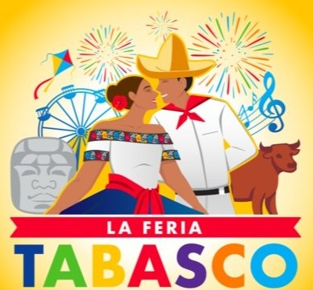

La feria se celebra en el Parque Tabasco “Dora María”, un recinto de 56 hectáreas con instalaciones modernas. Este año, la entrada será gratuita y contará con una amplia gama de actividades:

Espectáculos musicales:
Presentaciones de artistas como:
Barros (1 de mayo)
Chico Che Chico (2 de mayo)
La Arrolladora Banda El Limón (3 de mayo)
María José (4 de mayo)
Alfredo El Pulpo (5 de mayo)
Nelson Kanzela (6 de mayo)
Che Maney (8 de mayo)
Los Ángeles Azules (9 de mayo)
Alejandra Guzmán (10 de mayo)
Christian Nodal (11 de mayo).
Exposiciones:
Muestras ganaderas, agrícolas, artesanales y gastronómicas que reflejan la riqueza del estado.
Actividades familiares:
Juegos mecánicos, zona extrema, pista de hielo, globos aerostáticos y espectáculos diarios de fuegos artificiales.
Palenque:
Conciertos en un ambiente tradicional, destacando la música regional.
hi
Cada día, dos municipios son anfitriones, presentando su cultura y gastronomía en stands dedicados. La feria culmina el 11 de mayo con un espectáculo de fuegos artificiales y la clausura oficial por parte del gobernador del estado.
La Feria Tabasco 2025 promete ser una celebración inolvidable, resaltando la diversidad y riqueza cultural del estado.